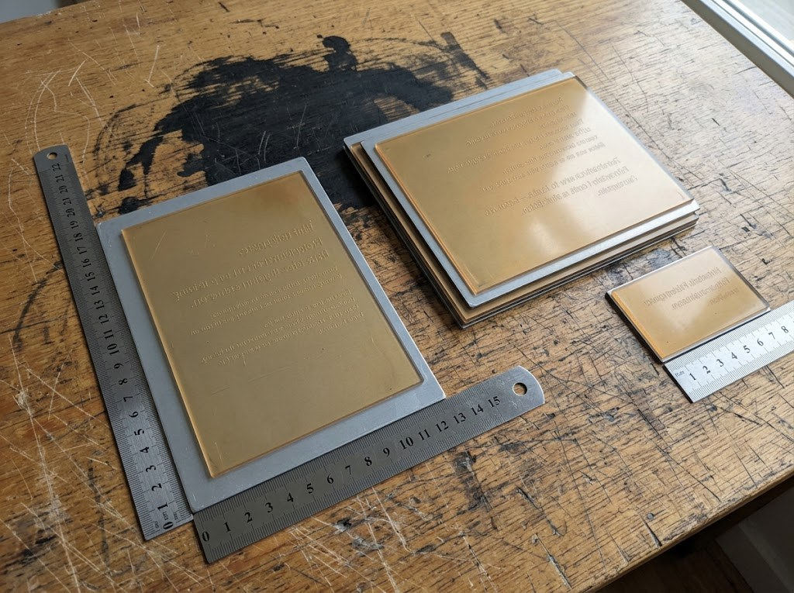

Slides/Section 2: What you may not tell Model A or Model B · slide 5
2.1A prompt that answers its own attachment
Fails the taskPrompt - MM Dependence
The mistake
The prompt hands the model a file and also states what the file exists to make it read, such as a count or which document is current. Leg B sends the same words to Model B, so it leaks to both.
Do this instead
State the requirement and leave the value to the file, then run both legs again.
Where it happened in Red Shell
One real Red Shell task. Each shows the spot and what it should have been; click any line to open the task there.
These examples come from Red Shell. Each one is a real Red Shell task, shown exactly as the Red Shell course shows it, and it illustrates an issue that must not be repeated in Green Shell: the same quality standards and expectations still apply. The rule line under each one is the Green Shell rule the same mistake breaks.
the words at faultthe row or field at faultmissing from the taskwhat is righta task file
Example 3Red ShellProperty & Space · 4 Leg A turns
What is wrongLeg A turn 2 releases IMG_4392.jpeg and tells Model A the count it exists to supply: "five big ones and one small one". Leg B turn 4 repeats it to Model B.
How it breaks the standardIMG_4392.jpeg shows one large plate by the rulers, a stack behind it and a small one; counting the stack is the read the photo exists to force. Given the count, Model A and Model B only have to measure one plate of each size. A count is a value, so this fails the task.
The Green Shell rule it breaksGuidelines · 1.2.3 Create the PromptPlants shortcuts, obvious clues, or filenames that reveal the answerOne of the marks of a weak prompt that fails the task.
Catch it in your own task
Read the prompt beside every file it hands over: any value the model should read from that file is a leak.
Where the Green Shell guidance is written
Section titles as they print in the Green Shell Guidelines and QC spec, so you can search for them.
Guidelines · 1.2.3 Create the Prompt
Plants shortcuts, obvious clues, or filenames that reveal the answer, including the answers in the Verification condition.
From the marks of a weak prompt that fails the task.
Guidelines · 1.2.3 Create the Prompt
Keeps thresholds, rules, and formats in the input files, where the agent must find them, unless the assigned scenario already states them.
From the marks of a strong prompt.
QC spec · Prompt - MM Dependence
Environments/prompts that let the agent finish without MM reasoning are similar to 'Leaking the Solution' errors.
Guidelines · 6.1 What Changes from Leg A
The no leak rule, on every turn you type.
What stays exactly the same in Leg B.
Why it matters
Once the value is in the prompt, the attachment is decoration: no criterion that depends on reading it can separate a run that opened the file from one that did not, for Model A or for Model B. A prompt that lets the agent finish without the multimodal reasoning is close to leaking the solution, and planting clues that reveal the answer is one of the marks of a prompt that fails the task.
Example 3A prompt that answers its own attachmentFails the task
Red Shell taskProperty & Space4 Leg A turnstask 6a9e4478f55775e9124002e5
From the taskLeg A prompt, turn 2, to Model A
the mistake
Leg A turn 2
Sorted the plates, the photo is fine to use now. There are five big ones and one small one, and they need to be stored flat somewhere in the unit. Add that into the HTML rather than starting over.
From the taskFrom the Leg B conversation, with Model B
You, as the user · Leg B turn 4
Sorted the plates, the photo is fine to use now. There are five big ones and one small one, and they need to be stored flat somewhere in the unit. Add that into the HTML rather than starting over.
From the taskLeg A prompt, turn 1, to Model A
the mistake
Leg A turn 1
Hi, I need a plan for the built-in on the front room wall, the one between the corner and the door. Halvard agreed to build it, but he needs a proper cut list as the wall isn't a perfect square. I measured it and took photos at the floor, middle and ceiling levels + made a sketch, and keep in mind that the photos are the ground truth for the measurements if something's off. I have a voice memo of what plywood he has and a sticky note with his shop rules attached so stick to those. It has to fit my drafting table, my bound notebooks(standing up) + my printing plates. I included a picture of my notebooks to see their sizes from and leave space for two more seasons of notebooks(my calendar has info on how many I do per season). I still have to verify something on the photo of the plates, so skip that for now. Write all up as front_room_builtin.html - the cut list in mm with each part sized to the real wall, how to scribe the edges that meet the wall and ceiling and a cutting diagram for each sheet.
Task fileIMG_4392.jpeg
Look at The photo Leg A turn 2 releases to Model A, and Leg B turn 4 to Model B. Count the plates yourself, including the stack at the back: that count is what both turns gave away.
IMG_4392.jpeginput file

1One large plate by the rulers2The stack at the back: count it yourself3The small one
Click the image to see it at full size, and again to fit it back.